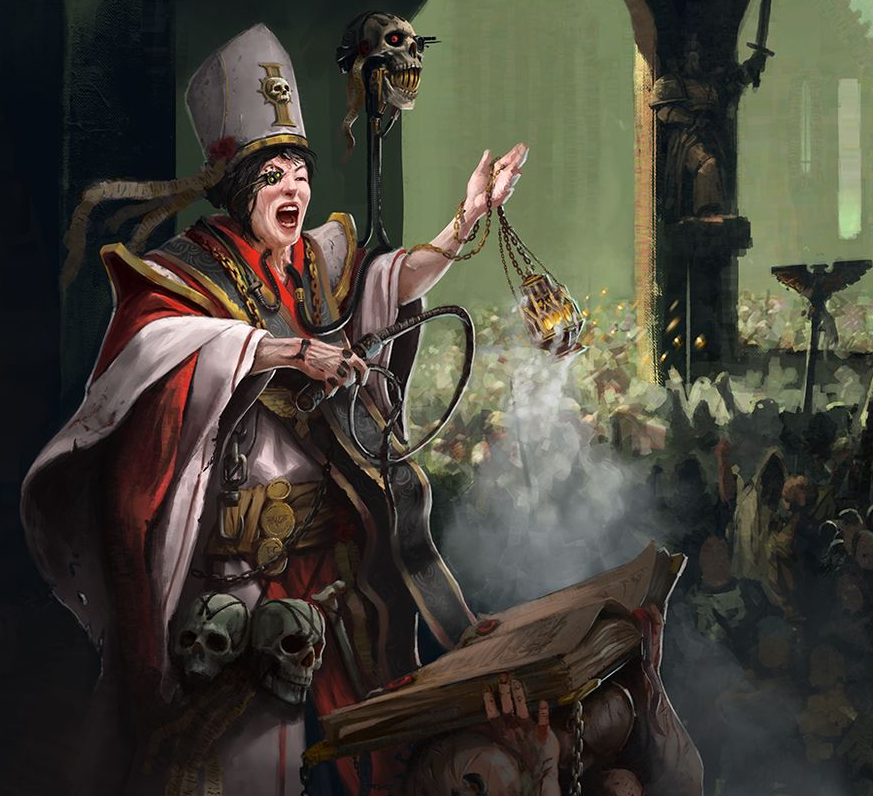

Dossier Ecclésiarchique 804.M41
L’Ecclésiarchie est la forme visible de la foi impériale. Là où l’Adeptus Ministorum organise la doctrine, l’Ecclésiarchie la rend vivante, imposée et omniprésente.
Elle ne se contente pas de prêcher. Elle construit, dirige et incarne la religion de l’Imperium dans chaque monde loyal.

FONCTION IMPÉRIALE
Ses cathédrales dominent les cités. Ses processions rythment les vies. Ses prêtres interprètent la volonté du Dieu-Empereur pour des populations souvent incapables de remettre en question ce qu’on leur enseigne.
La foi impériale n’est pas une option. Elle est une obligation.
L’Ecclésiarchie veille à ce que cette obligation soit respectée. Les sermons renforcent la dévotion. Les rites structurent l’existence. Les sanctions rappellent les conséquences du doute.
Son influence dépasse la simple religion. Elle affecte la politique, la culture et la perception même de la réalité pour les citoyens impériaux.
DOGME ET DEVOIR
Dans certains mondes, elle détient un pouvoir équivalent à celui des gouverneurs. Dans d’autres, elle agit en parallèle, imposant une pression constante sur les décisions locales.
Les fanatiques ne sont pas une anomalie. Ils sont un produit direct de cette structure.
Les croisades de foi, les purges religieuses et les sacrifices collectifs ne sont pas rares. Ils sont considérés comme nécessaires pour maintenir la pureté de l’Humanité.
Cette intensité renforce la cohésion. Mais elle crée également des excès.
HÉRITAGE AU SERVICE DU TRÔNE
L’histoire impériale contient de nombreux exemples où la ferveur a dépassé toute mesure. Mondes brûlés. Populations sacrifiées. Guerres déclenchées au nom d’une interprétation.
Pourtant, malgré ces dérives, l’Ecclésiarchie reste essentielle. Elle donne un sens à la souffrance. Elle transforme la peur en dévotion. Elle maintient l’unité là où la logique seule échouerait.
Il faut comprendre ceci. L’Ecclésiarchie ne protège pas l’Humanité en la rendant libre. Elle la protège en la rendant croyante.
Et dans l’Imperium, croire est souvent la seule chose qui empêche de sombrer.
Fin de l’extrait. Toute déviation religieuse doit être signalée. Le doute est la première étape de la chute.